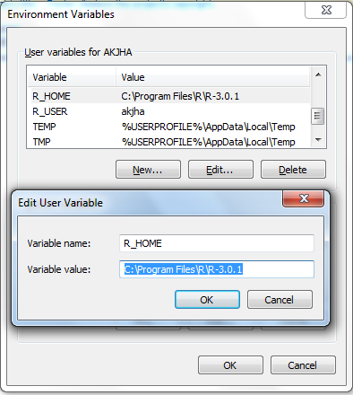

Follow the instruction as given in Figure 1 for Setting up R_HOME and R_USER environment variable
on Windows OS.
Step 1.On windows 7/8 search on search program box in windows startup
"Edit environment variables for your account" and “Click".
Step 2 Click on New in “Environment Variables” dialogue box and Enter “Variable name” and “Variable Value as shown below.

Note: Variable value will be based on your R installed directory.
Follow the step 2 to setup another variable called R_USER. E.g. R_USER is set to akjha in “Environment Variables” dialogue box in Figure 1
(OpenLDM) v1.0 IIRS